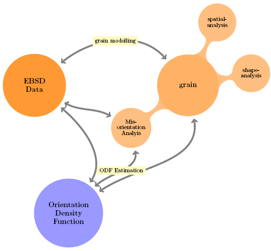

EBSD Data Analysis
This sections describes the class EBSD and gives an overview over the functionality MTEX offers to analyze EBSD data.
| On this page ... |
| Description |
| Import of EBSD Data |
| Plotting EBSD Data |
| Modify EBSD Data |
| Calculate an ODF from EBSD Data |
| Simulate EBSD Data |
| Demo |
Description
The following mindmap might give a basic idea about EBSD data analyis in MTEX, with the ability of grain modelling for spatial data, it offers varios way of interpreting individual orientation measurements, i.e. in terms of quantifying macro-,micro- and mesotexture.

Import of EBSD Data
The most comfortable way to import EBSD data into MTEX is to use the import wizard, which can be started by the command
import_wizard('ebsd')
Undefined function or method 'import_wizard' for input arguments of type 'char'.
Error in ==> script_FDTDSimulationResults_index at 24
import_wizard('ebsd')
If the data are in a format supported by MTEX the import wizard generates a script which imports the data. More information about the import wizard and a list of supported file formats can be found here. A typical script generated by the import wizard looks a follows.
cs = symmetry('m-3m'); % crystal symmetry ss = symmetry('triclinic'); % specimen symmetry % file names fname = [mtexDataPath '/aachen_ebsd/85_829grad_07_09_06.txt']; % load data ebsd = loadEBSD(fname,cs,ss,... 'interface','generic','Bunge','ignorePhase',[0 2],... 'ColumnNames', { 'Phase' 'x' 'y' 'Euler 1' 'Euler 2' 'Euler 3'},... 'Columns', [2 3 4 5 6 7]);
Plotting EBSD Data
EBSD data are plotted using the plot command. It assigns a color to each orientation and plots a map of these colors. There are several options to specify the way the colors are assigned.
figure('position',[100 100 600 300]) plot(ebsd,'antipodal')
In order to understand the colorcoding one can plot the coloring of the corresponding inverse pole figure via
colorbar hold on plotipdf(ebsd,xvector,'markerSize',3,'points',500,'marker','o','markerfacecolor','none','markeredgecolor','k') set(gcf,'renderer','opengl') hold off
Modify EBSD Data
MTEX offers a lot of operations to analyze and manipulate EBSD data, e.g.
- plot pole figures of EBSD data
- rotate EBSD data
- find outliers
- remove specific measurements
- combine EBSD data from several meassurements
- compute an ODF
An exhausive introduction how to analyze and modify EBSD data can be found here
Calculate an ODF from EBSD Data
The command calcODF performs an ODF calculation from EBSD data using kernel density estimation EBSD data. For a precise explaination of the algorithm and the available options look here.
odf = calcODF(ebsd,'halfwidth',10*degree) plotpdf(odf,Miller(1,0,0,cs),'antipodal')
Simulate EBSD Data
Simulating EBSD data from a given ODF has been proven to be usefull to analyze the stability of the ODF estimation process. There is an example demostrating how to determine the number of individuel orientation measurements to estimate the ODF up to a given error. The MTEX command to simulate EBSD data is simulateEBSD, e.g.
ebsd = simulateEBSD(unimodalODF(idquaternion,cs,ss),500) plotpdf(ebsd,Miller(1,0,0),'antipodal','MarkerSize',3)
Demo
For a more exausive description of the EBSD class have a look at the <ebsd_demo.html EBSD demo<!